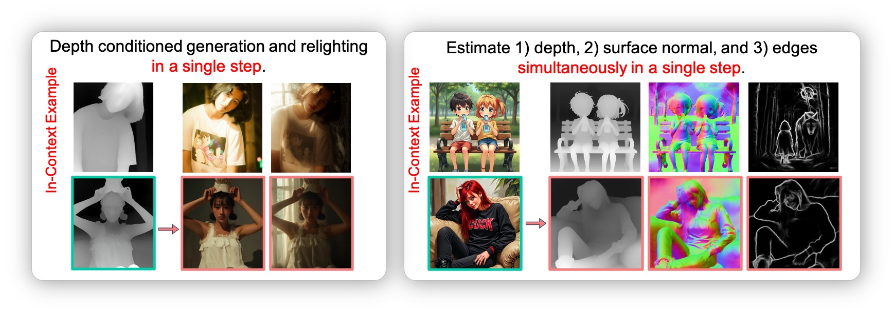

Generalization to Unseen Tasks via In-Context Learning
The model, if relying solely on language instructions, struggles to generalize to different tasks.
Instead, in-context learning allows the model to understand and perform tasks from a few demonstrations.
Interestingly,
we find that our method can unify multiple tasks into one step and
generate not only the target image but also the intermediate results.

Reverse Generation
Our method supports reverse generation, i.e., reverse-engineering a set of conditions from a target.
Abstract
Recent progress in diffusion models significantly advances various image generation tasks.
However, the current mainstream approach remains focused on building task-specific models,
which have limited efficiency when supporting a wide range of different needs.
While universal models attempt to address this limitation, they face critical challenges,
including generalizable task definition, appropriate task distributions, and unified architectural design.
In this work, we propose VisualCloze,
a universal image generation framework, to tackle these challenges.
Unlike existing methods that rely on language-based task descriptions, leading to task ambiguity and weak generalization,
we integrate visual in-context learning, allowing models to identify tasks from demonstrations.
Meanwhile, the inherent sparsity of visual task distributions hampers the learning of transferable knowledge across tasks.
To this end, we introduce Graph200K, a graph-structured dataset that establishes various interrelated tasks,
enhancing task density and knowledge transfer.
Furthermore, we uncover an intrinsic alignment between image infilling and in-context learning,
enabling us to leverage the strong generative priors of pre-trained infilling models without modifying their architectures.
Experiments demonstrate that VisualCloze achieves strong performance across various in-domain tasks
while generalizing to unseen tasks in few-shot and zero-shot settings.
Method
We provide a few in-context examples as visual demonstrations to clarify the desired task.
Specifically, we find that a consistent objective between image in-filling and our in-context learning based universal generative models.
Through concatenating all input and output images into a grid-layout image, the objective of a task is to fill the output area.
To this end, we build VisualCloze upon advanced general-purpose infilling models, i.e., FLUX.1-Fill-dev, without additional modifications in the architecture.
A potential limitation lies in the difficulty of composing a grid image from in-context examples with varying aspect ratios.
To overcome this issue,
we leverage the 3D-RoPE in FLUX.1-Fill-dev to perform context concatenation along the temporal dimension,
effectively overcoming this issue without introducing any noticeable performance degradation.
Dataset
In natural language processing, tasks overlap significantly, facilitating strong cross-task learning ability.
In contrast, visual tasks are inherently distinct, posing challenges for vision models to achieve similar generalization ability via instruction tuning.
To ease this issue, we introduce a Graph Structured Multi-Task Dataset, named Graph200K.
Graph200K is built upon the Subjects200K dataset.
Each image is annotated for five meta-tasks, including 1) conditional generation, 2) image restoration, 3) image editing, 4) IP preservation, and 5) style transfer.
These tasks can also be combined to form a wide range of complex tasks.
We leave the discussions about data construction in our paper.
BibTex
@inproceedings{li2023photomaker,
title={PhotoMaker: Customizing Realistic Human Photos via Stacked ID Embedding},
author={Li, Zhen and Cao, Mingdeng and Wang, Xintao and Qi, Zhongang and Cheng, Ming-Ming and Shan, Ying},
booktitle={IEEE Conference on Computer Vision and Pattern Recognition (CVPR)},
year={2024}
}